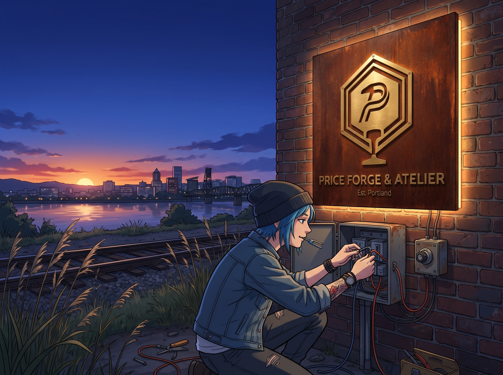

點燈

傍晚七點半，波特蘭東區的天空沉澱成一片深邃而濃郁的靛藍色。
晚霞的最後一抹金紅在威拉米特河上空漸漸隱去，廢棄鐵道兩旁的野燕麥在微涼的夜風中輕輕搖曳。
車廂外壁下，最後的電路接線工作進入尾聲。Chloe 整個人半蹲在招牌下方的防雨配電箱前，嘴裡叼著一把微型剝線鉗，雙手熟練地將嵌入招牌背面 15 毫米懸空縫隙中的 2700K 暖白光防水 LED 燈帶線路，接入一個由老式雪佛蘭點火開關改裝的「復古旋鈕控制盒」。
「好了，電壓穩定在 12 伏特，直流電源箱與接地線全部通過負載測試。」Chloe 吐掉剝線鉗，利落地用熱縮套管將最後一個焊點封死，隨後站起身，甩了甩有些發酸的手腕，轉頭朝著站在鐵軌旁的另外三人挑眉大喊，「全體退後三步！準備見證歷史性的通電時刻！」
Max、Kate 和 Victoria 並排站在碎石道床上。
Victoria 裹著一件駝色羊絨風衣，手裡端著 Kate 帶來的保溫杯，難得沒有催促，只是抱著雙臂，安靜地注視著那塊在昏暗暮色中輪廓硬朗的巨大金屬招牌；Kate 雙手合十握在胸前，眼睛裡滿是期待的微光；Max 則早早將相機架在三腳架上，快門線捏在手心，黑框眼鏡後倒映著夜幕下的鋼鐵巨物。
「點燈人由我們的品牌首席設計總監兼主要金主——Victoria Chase 女士執行！」Chloe 大步走上前，一把拉起 Victoria 的手，將那枚黃銅復古旋鈕的控制權塞進了她戴著皮手套的手心裡。
「粗魯的傢伙……」Victoria 象徵性地哼了一聲，卻沒有抽回手。她看著身邊三個女孩注視著自己的熱切眼神，深吸了一口氣，嘴角微揚，指尖發力，將黃銅旋鈕順時針清脆地擰到底——
「咔嗒。」
微弱的繼電器吸合聲在寂靜的鐵道旁響起。
緊接著，一道柔和、深沉而極具穿透力的暖金色漫射光，從招牌背面 15 毫米的懸空夾層中驟然亮起！
光線穿透夜色，在深紅粗獷的耐候鋼底板上暈染出一圈極其乾淨的幾何光暈。在柔光的反襯下，正面手工橫向拉絲的實心老黃銅立體字被賦予了宛如浮雕般的生命力：幾何螺母與鋼軌切面構成的重型標識在暗夜中傲然矗立，「PRICE FORGE & ATELIER」與「Est. Portland」的每一個字母邊緣，都投射出深邃而鋒利的立體剪影。
金屬的冰冷、鐵鏽的厚重與暖光的溫柔在此刻達到了近乎完美的平衡。
「天哪……」Kate 忍不住輕輕掩住了嘴，眼中倒映著那片溫暖的金色光芒，「它看起來……就像是一座在夜裡為旅人指路的車站燈塔。」
「這光影漫射的漸變層次太驚人了……」Max 迅速按下了快門線，相機快門發出清脆扎實的「咔嚓」聲，將這片光芒與女孩們的笑臉定格下來。
光線穿透鋼板，也悄悄溫暖了背後那個夾層——那裡正靜靜躺著四個人的黑白合影、乾枯卻芬芳的迷迭香，以及刻著她們名字的舊墊片。
Victoria 站在原地，仰頭注視著那塊在波特蘭夜色中熠熠生輝的招牌，眼底最後一絲審視與苛刻徹底融化在金色的光暈裡。她微微仰起精緻的下巴，輕聲說道：
「不得不承認……這是我見過最配得上這條破爛鐵道的招牌了。」
「那是當然！」Chloe 暢快地大笑起來，長臂一伸，直接將身邊的三個人同時拉進懷裡，狠狠摟住，「敬波特蘭東區最硬核的起點！從今天起，這輛火車——正式通電啟航！」
尾聲：扎根
點燈儀式後，暖金色的漫射光靜靜照亮了招牌下方那片剛翻整過的泥土。
趁著大家還沉浸在燈光亮起後的笑鬧中，Kate 已經悄悄提著她那隻刻著小白鴿圖案的胡桃木工具箱，蹲在了招牌兩側剛搭好的木質花槽旁，種下了兩株波士頓常春藤幼苗，並用細黃銅絲將初生的卷鬚輕巧固定在鋼板兩側預留的掛扣上。
「等到今年秋天，」她輕聲說著，將黃銅澆水壺裡的雨水均勻灑在根部周圍，「它們就會沿著鋼板邊緣慢慢爬上去，像一雙溫柔的手，把整塊招牌輕輕抱住。」
「這可是 Kate 從天台親手培植出來的第一代幼苗，」Max 端著相機蹲下身，將鏡頭對準那片映著暖金燈光、掛著水珠的嫩綠葉片，「它會和我們這節火車一起長大。」
「好了，大天使，」Chloe 大大咧咧地伸出右手，一把將沾了點泥土的 Kate 從地上拉了起來，「現在金屬有電了，植物也扎根了。今晚老娘在車廂裡煮了熱可可，誰要是最後一個進門，誰就負責洗杯子！」
四個女孩在打鬧聲中先後鑽進了亮著溫暖燈火的車廂。夜風拂過空曠的鐵道，招牌上方的暖金色燈光在夜色中長明不熄，而下方的常春藤幼苗則在微風與溫潤的泥土中悄悄舒展著嫩葉，伴隨著光芒與希望，向著堅固的鋼鐵向上攀生。